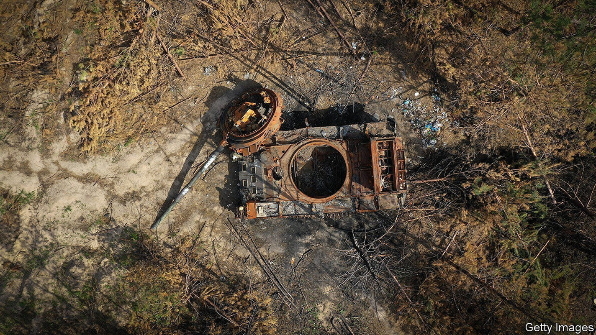
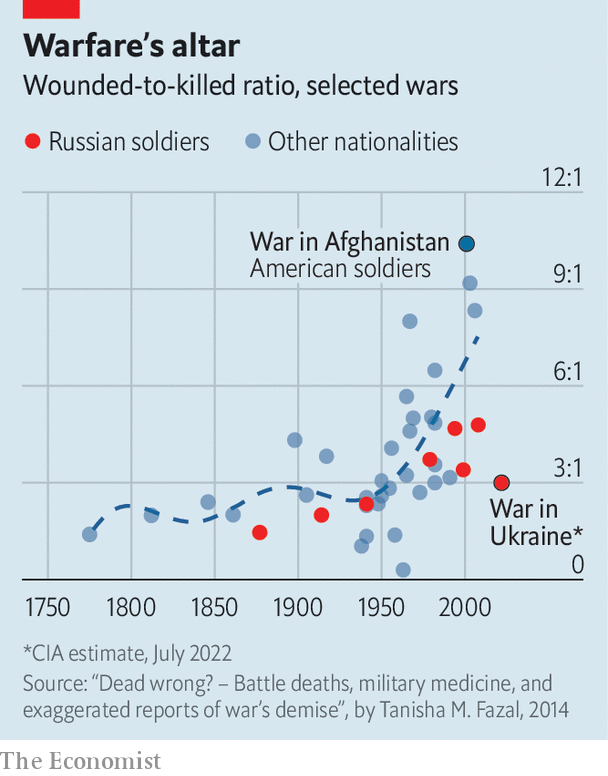

The CIA and MI6 say 15,000 Russians have died. Estimating such things involves a lot of guesswork

The average war since 1816 has seen around 50 battlefield deaths a day. Russia’s war in Ukraine is much bloodier. In recent days Bill Burns, the director of the cia, Richard Moore, the chief of mI6, and Mikk Marran, the head of Estonia’s foreign intelligence service, have all said that around 15,000 Russians have died since February 24th—an average rate of more than 100 per day. Ukrainian officials say that, recently, their own casualty rate has been similar, and at times much worse. “My expectation is that the war will exceed the deadliness of other large non-world war European wars, like the 1870-71 Franco-Prussian War,” says Paul Poast of the University of Chicago. But how are casualty figures estimated?
Military casualties are divided into two main categories: killed in action (kia) and wounded in action (wia), some of whom die later. Those who are captured and taken as prisoners-of-war and those who go missing are counted separately. Some estimates of Russian casualties in Ukraine cover only army personnel. Others include forces from the Rosgvardiya (national guard), fsb (the main successor to the kgb) and other non-army regulars, like the vdv airborne forces that were decimated in the first phase of the conflict. And some take in fighters from Russian-backed militias in the Luhansk and Donetsk people’s republics—a pair of puppet governments in eastern Ukraine—which have conscripted large numbers of local residents. These, alongside Russian mercenaries, have done much of the hard fighting in recent months.
American officials reckon that between 15,000 and 20,000 Russians, across all three of these categories, have died in total since the war began on February 24th, according to one informed source. On June 29th Ben Wallace, Britain’s defence minister, said that 25,000 Russians had been killed. In truth, Mr Burns was citing the lower bound of America’s estimate; Mr Wallace the upper end of his. Ukraine’s own tally is 38,500 as of July 19th, though the country has an obvious incentive to proffer the highest possible figure. On July 19th Oleksii Reznikov, Ukraine’s defence minister, claimed, somewhat implausibly, that 11,000 Russians had died in the battles for Severodonetsk and Lysychansk alone.
This spread of figures reflects the fact that estimating another country’s casualties inevitably involves guesswork. “It is not a precise science,” says one Western official. The details of casualty estimation tend to be classified, but analysts have several means at their disposal. One is to piggyback on Russian estimates by using secret intelligence, such as agents inside the Russian government or intercepted communications in which Russian units describe their casualties. Yet these can be distorted: Western officials think Mr Putin himself is not being given the full picture of how badly his war is going.
Another is to go by Ukrainian “contact reports” of the same battles, though that becomes harder when much of the fighting is done beyond visual range by artillery, rather than in close-up infantry combat. The third is to infer casualties from destroyed equipment, which can be observed on everything from social media to satellite imagery, drawing on prior knowledge of how many Russians tend to man a particular vehicle (the Russian tank pictured above will have had three crew members, for instance) or make up a certain sort of unit. However these calculations are made, what is clear is that their “error bars” are wide, reflecting considerable uncertainty.
Getting at figures for those wounded is even harder. It is also vital, since an army’s effectiveness depends not on how many of its soldiers die but on how many are out of action. Some of that can be done by observing field hospitals, blood stockpiles and other indicators of medical activity. Usually, though, analysts have to make inferences on the assumption that soldiers tend to be wounded in a somewhat predictable ratio to the number killed.

But which ratio to pick? In the first and second world wars, the average ratio for America’s army was just over three to one—that is, three wounded for every one killed—according to figures compiled by the Dupuy Institute, which collects historical data on war. However, that changed over the 20th century. Research by Tanisha Fazal of the University of Minnesota shows that the wounded-to-killed ratio has soared in the post-war period (see chart) because soldiers go into war much healthier, have better protective equipment once they get there, are evacuated faster if they are injured and enjoy better medical care overall.
A war that killed 1,200 soldiers in 1860 would be expected to produce just 800 fatalities by 1980, she notes—but many of those who would earlier have died will show up as wounded. Consequently in the Iraq war, between 2003 and 2011, the ratio for America’s lavishly resourced army was almost nine to one; in Afghanistan almost ten to one. These ratios, the highest ever achieved in a big modern war, were in part the result of getting critical care to wounded soldiers within 60 minutes of an injury, a period known as the “golden hour”, by deploying more surgical teams and speeding up medical evacuation, or medevac.
The question is how much of this applies to Russia. In Iraq and Afghanistan, America made intensive use of helicopters for medevac. That is harder when helicopters get shot down a lot—as they do in Ukraine. America would arguably face the same problem in comparable circumstances. Dr Fazal, writing with military doctors in War on the Rocks, an online journal, in 2018, noted that simulations showed that treatment within the golden hour would be far harder for America in a scrap with a peer or near-peer adversary. A war against North Korea, for instance, would require evacuating casualties equivalent in number to those suffered by America in all its conflicts in the previous 17 years (including Iraq and Afghanistan) “in a period of months, if not weeks”. That would swamp even America’s medevac capabilities.
And Russia’s are rustier. Its military medicine is “less developed” than its Western equivalent, says Ronald Ti, an expert on military medical logistics at King’s College London (kcl), with particular weaknesses in battlefield trauma medicine delivered by paramedics. The emphasis—as in many former Soviet republics, including Ukraine—is on sending casualties back to doctors in hospitals in rear areas. “This is all well and good,” says Dr Ti, “but the result is that casualties turn into deaths because of the longer evacuation lines.”
That is evident from Western figures. Mr Burns and Mr Marran said that Russia had suffered three times as many wounded as killed. That is roughly in line with documents captured by Ukraine, and analysed by Rob Lee of kcl and Michael Kofman of cna, a think-tank. The documents showed losses in the 1st Tank Army, a key Russian offensive formation, until mid-March. They suggested a 3.4:1 ratio, rising to 4:1 if missing soldiers were counted as dead. The latter is very close to the ratio reported by the Donetsk people’s republic militia, who, unlike the Russian army, have faithfully documented their casualties. A further wrinkle, says Mr Kofman, is that the ratio can fall as wounded soldiers die but rise as artillery—a weapon that wounds through shrapnel—dominates the battlefield, as it has in recent months.
These calculations might seem arcane. But the specific ratio one chooses has important implications for judging just how badly the Russian army has been mauled, a key metric in a protracted war of attrition. The choice of a 3:1 ratio by American and Estonian intelligence suggests that 60,000 Russian fighters have been taken off the battlefield, though some soldiers wounded in February or March will have recovered by now.
If instead Mr Wallace’s death toll is correct, it implies 100,000 have been put on the sidelines at one time or another. That rises to a whopping 125,000—equivalent to the entire ground combat force with which Russia started the war—if Ukraine’s new Western artillery has inflated the ratio to 4:1. This multiplier effect means that very high estimates of Russian deaths are less plausible, argues Mr Kofman. If overall casualties were dramatically higher than the American and British figures, the Russian army would visibly have been in even deeper trouble long ago.
Nevertheless, Russian losses on this scale do explain why so many Russian battalions are grossly understrength, why their advance in Donbas has been grindingly slow and why the army is now scraping together reserve battalions from volunteers across the country. If Ukraine mounts a large-scale counter-offensive in the southern Kherson province in the coming months, that will stretch Russian forces thinner still. And the officers who lead the army have been especially badly hit: “thousands” of lieutenants and captains and “hundreds” of colonels have been killed, observed an American official on July 22nd. Unsurprisingly, the number of troops refusing to fight now runs into the thousands, says another source.
Perhaps the saving grace for Vladimir Putin, Russia’s president, is that there has so far been no serious backlash at home to such profligacy. “These are not middle-class kids from St. Petersburg or Moscow,” noted mI6’s Mr Moore. “These are poor kids from rural parts of Russia. They’re from blue-collar towns in Siberia. They are disproportionately from ethnic minorities. These are his cannon fodder.”■